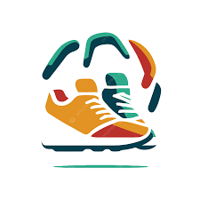

All AI Literacy Tools
Browse our curated AI literacy tools to enhance your skills and knowledge in artificial intelligence.
Mystery Cat

Learn about pattern recognition through an interactive game.

Recommended age: 18+
Quizzer AI

Test your knowledge about AI with our quiz.

Recommended age: 13–17
Think Link AI Memory

Can you find the matching pAIrs.

Recommended age: 16+
AI Concept Explorer
Discover tricky AI ideas made simple with fun animations and easy-to-understand explanations.

Recommended age: 12–16
AI Ethics Poll
Share your thoughts and see what others think about the big questions around AI and fairness.
Recommended age: 16+
AI Term Flashcards
Learn AI buzzwords easily with interactive flashcards designed for busy learners.
Recommended age: 11–14
AI Timeline Adventure
Travel through time and explore the coolest moments in AI history with this interactive journey.
Recommended age: 10–13
Algorithm Race
Race different AI algorithms and see which one wins at sorting data fastest!
Recommended age: 13–17
Bias Buster Quiz
Challenge yourself to spot bias in data and AI models with quick, fun quizzes.
Recommended age: 15–18
Data Prep Game
Clean, sort, and prep your data like a pro—in this playful mini-game for future data wizards.
Recommended age: 12–16
Data Visualization Studio
Turn boring numbers into colorful charts — discover how visuals help AI make sense of data.
Recommended age: All ages
Ethics Scenario Simulator
Step into real-life AI dilemmas and make tough calls in this interactive ethical decision game.
Recommended age: 16+
Explainable AI Chat
Chat with a friendly AI who tries to explain its thinking in plain English.
Recommended age: 12–15
Feature Detective
Become a data detective and pick out the most important clues hidden in messy data.
Recommended age: 11–14
Model Evaluator Challenge
Test your skills by comparing pretend AI models — which one makes the best predictions?
Recommended age: 14–18
Neural Network Builder
Play around by building your own virtual brain—connect neurons and layers to see how AI thinks!
Recommended age: 13–17
Pattern Recognition Puzzle
Solve puzzles that reveal how AI spots patterns you might miss.
Recommended age: 8–12
Training Lab
Watch your AI model learn and grow as you tweak the training — see those numbers improve!
Recommended age: 14–18